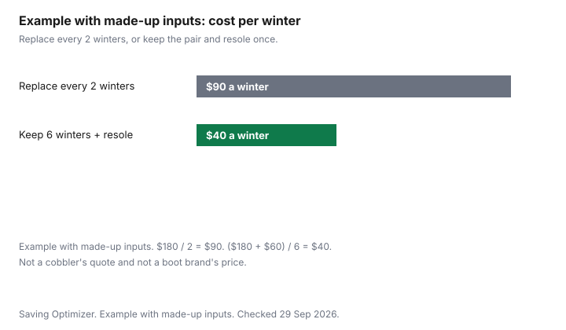

Clothing · Canada
Shoe and Boot Repair in Canada: Resoling, Heels and Zippers vs Buying New
A boot with a sound upper and a bald sole is a repair question, not an automatic new pair. The expensive mistake is paying for a resole the construction cannot take, or throwing out a welted boot because the tread looks finished. This page separates those cases, then compares a made-up cost per winter so the arithmetic is visible. It does not cite a cobbler's price list. Ask the shop that will do the work. Winter boots as a purchase, before they ever see a cobbler, are the winter boots budget. Keeping the rest of the wardrobe in rotation is make clothes last longer. When a machine is the thing that failed, the household version of repair-versus-replace is repair or replace. Education only. A cobbler who has not seen the pair has not accepted the job.
Key takeaways
- Look for a stitched welt between the upper and the sole, or a sole that is only glued on. A cobbler decides whether that pair can be resoled. This page cannot decide it from a photo in your head.
- No cobbler price list is cited here. Blundstone Canada's care page says sole replacement is among the services at its listed shops, prices and times vary by location, and repairs may void the warranty.
- Blundstone recommends conditioning every 3 to 6 months to maintain weatherproofing. Care and conditioning is complimentary at Australian Boot Company locations. Charges may apply elsewhere.
- Ask the maker before a third-party repair if the pair might still be under warranty. Blundstone tells owners to write to service@blundstone.ca.
- Example with made-up inputs: replacing an $180 pair every 2 winters is $90 a winter. Keeping that $180 pair for 6 winters with one $60 resole is $40 a winter.
Which footwear can be resoled
Turn the boot over and look at the join. A welt is a strip of material stitched between the upper and the sole. You can often see the stitch line running around the edge. A cemented sole is glued. The edge is smooth, or it shows a glue line and no stitches. A moulded cup, common on inexpensive winter boots, is one piece of rubber or plastic that is not meant to come off and go back on. Stitched or welted constructions are the ones cobblers usually mean when they say a pair can be resoled. Cemented pairs sometimes can, and sometimes the upper tears when the sole comes off. The person who will do the work is the person who can say which yours is.
Signs the repair is the wrong spend, even when a stitch line is there: the upper is cracked through, the lining is shredded, the heel counter has collapsed so the foot slides, or the sole is separating because the upper itself has failed, not because the tread is worn. A new sole on a boot that already lets water in at a split seam does not buy another winter. Half soles and heel tips are smaller jobs than a full resole. They make sense when only the strike point is gone and the rest of the sole still has tread. A zipper, a restitch, and a waterproofing treatment are separate lines. Waterproofing does not rebuild a sole. It is a surface treatment, and it fails if the leather is already split.
| Repair | Construction that can take it | When to skip it | Price |
|---|---|---|---|
| Heel tips | Dress shoes and boots with a separate heel, stitched or cemented, if the heel stack is still solid. | The heel breast is crumbling, or one side is worn into the upper. | Ask the shop. No published cobbler list is cited on this page. |
| Half sole | A sole that is worn at the ball of the foot and still sound at the heel and the welt. | The whole sole is bald, cracked, or coming off in sheets. | Ask the shop. |
| Full resole | Stitched or welted boots and shoes a cobbler agrees to rebuild. Some cemented work boots, only if the shop says the upper will survive. | Moulded soles, a failed upper, or a quote that meets a replacement you would wear. | Ask the shop. Blundstone says its listed locations vary on price and time. |
| Zipper | A boot whose zipper tape still has cloth to sew into, and whose upper is otherwise sound. | The zipper has torn out of rotten fabric, or the boot is a cemented fashion pair you will not wear next winter. | Ask the shop. Confirm they replace winter-boot zips before you leave the pair. |
| Stitching | A split seam with sound leather or cloth on both sides. | The seam opened because the material itself has torn away. | Ask the shop. |
| Waterproofing | Leather that is intact. Blundstone points owners to conditioning every 3 to 6 months for weatherproofing. | A split, a hole, or a sole that already lets water in. A coating will not close those. | Complimentary at Australian Boot Company locations for Blundstone care. Charges may apply elsewhere. Other brands: ask. |
Typical repair costs (collect locally)
Collect the price in your city. This guide does not cite a cobbler's published price list, so it does not print a heel-tip dollar, a half-sole dollar, or a resole dollar as if those were Canadian rates. Ranges that circulate as "typical" without a shop's name on them are not used here. The number that matters is the written price for your pair, after the cobbler has seen the construction.
What you can take from a brand page is narrower. Blundstone Canada's authorized care and repair page, checked 29 Sep 2026, says listed locations offer or facilitate elastic and pull-tab replacement, leather conditioning, stitching repair, interior boot repair, and sole replacement or repair. It says some or all of those services may require you to leave the boots. Australian Boot Company locations in Vancouver and Toronto do not repair on site. They facilitate drop-off and pick-up with local repair centres. The page then says prices and fulfilment times vary by location, and to contact the location. That is the instruction to follow, including for a pair that is not a Blundstone: the shop in front of you sets the price.
Example with made-up inputs. A pair at $180, replaced every 2 winters, costs $90 a winter. The same $180 pair kept for 6 winters, with one resole at $60, costs $240 over those 6 winters, which is $40 a winter. The $180, the $60, the 2 winters, and the 6 winters are made up. They are not Blundstone's prices and not a cobbler's quote. If the quote you receive is $160 and you only expect two more winters, the division changes, and replacement can win. Use the chart to see the shape of the comparison, then put your quote in the $60 slot.
Winter salt damage prevention
Winter roads leave a pale residue on leather and on rubber. Knock the dry residue off before it sits, wipe the pair, and dry them at room temperature. A heat register and a radiator bake the leather and the glue. That household step is not a brand warranty. It is how you avoid arriving at a cobbler with leather that has already cracked.
For Blundstone boots, the brand's own care page is more specific. It recommends conditioning every 3 to 6 months so the boots keep their weatherproofing. Care and conditioning is complimentary at Australian Boot Company locations. Charges may apply at the other care locations on that list. Conditioning is not a resole. If the sole is already worn through, book the sole conversation, and do not expect a conditioner to rebuild tread. Other brands print their own intervals. Follow the page that matches the pair you own, or ask the shop, rather than copying a 3-to-6-month line onto a boot the maker never mentioned.
Warranty claims first
A repair you pay for can close the door on a repair the maker would have done. Blundstone's care page says making repairs to your boots may void your warranty, and it tells owners to consult Blundstone Canada at service@blundstone.ca before they proceed. Read that sentence before you drop a pair that might still be covered. The same page says Blundstone Canada is not responsible for loss, damage, or misrepresentation of services from the shops on its list. An authorized location is not a promise that every job will be free, and it is not a promise the brand will stand behind a result it did not do.
The order of operations is short. Find the receipt or the account the boots were bought on. Read the warranty that came with them, on the maker's site if you do not have the paper. If the failure is the kind the warranty names, ask the maker first. If the warranty has finished, or the maker says the sole wear is ordinary use, then the cobbler is the next call. Do not sand, glue, or oil a pair you still hope to claim. Photographs of the failure, taken before anyone works on the boot, are the record you will wish you had.
Finding a cobbler
If the pair is a Blundstone, the brand publishes a list. Repair locations named on the page checked 29 Sep 2026: Australian Boot Company on Gastown and Kitsilano in Vancouver, and on Yonge Street and Queen Street in Toronto; Vince DeVito in Nelson, B.C.; Cordonnerie Rockland in Mount Royal, Quebec; Broadway Shoe Repair in Saskatoon; Service Shoe in Moncton; Quick Cobbler in Vancouver; and Kumpfy Shoes & Repair in Canmore, Alberta. Boot-care locations, for conditioning rather than the full repair list, also include First Western Boutique in St. John's, Take It Outside in Truro, Dartmouth, and Moncton, and Trail Shop in Halifax. That list is not a ranking, and it is not the only cobbler in those cities. It is the list one brand was willing to print.
For any other pair, search shoe repair in your city and ask four things before you leave the boots: can you resole this construction, what is the written price, how long will you keep them, and do I get a claim ticket. Ask whether a winter zipper can be replaced on that pair, because not every shop will open a tall shaft. Repair cafés are organized around appliances in that guide. A few welcome shoes. Phone first. A cobbler who will not look at the welt before quoting is guessing. You can still get a second look. You should not pay the guess.

Sources & date stamps
- Blundstone Canada, Authorized Care & Repair Program, blundstone.ca/pages/blundstone-boot-dr, checked 29 Sep 2026. Services, location list, complimentary conditioning at Australian Boot Company, prices vary by location, repairs may void the warranty, service@blundstone.ca.
- No cobbler published a heel, half-sole, full-resole, or zipper price list that this guide cites. Local quotes stay local.
Frequently asked questions
Can my boots be resoled?
Look for a stitched welt between the upper and the sole. A cemented or moulded sole may not come off cleanly. A cobbler who has the pair decides. Cracked leather, a shredded lining, or a collapsed heel are reasons to skip the job even when a stitch line is there.
When is shoe repair worth it?
When the upper is sound and the written quote buys more seasons than a replacement you would wear. Example with made-up inputs: an $180 pair replaced every 2 winters is $90 a winter. The same pair kept 6 winters with a $60 resole is $40 a winter. Those figures are made up. This guide does not cite a cobbler's price list.
How do I find a cobbler?
If the boots are Blundstone, the brand publishes a Canadian location list and says prices vary by shop. For any pair, ask whether that construction can be resoled, the written price, how long they keep the boots, and for a claim ticket. Phone before you assume a community repair event will take shoes.
Can a zipper on winter boots be replaced?
Often, if the cloth the zipper sews into is still sound. Ask the shop before you leave a tall boot, because not every bench does that job. If a warranty might still apply, ask the maker first. Blundstone says repairs may void the warranty and points owners to service@blundstone.ca.
How do I make boots last longer?
Knock off winter residue and dry the pair at room temperature, away from a heat register. Blundstone recommends conditioning every 3 to 6 months for weatherproofing, complimentary at Australian Boot Company locations. Conditioning does not rebuild a bald sole. Other brands: follow their own care page.